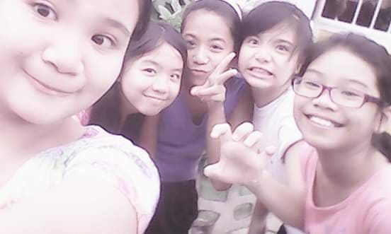
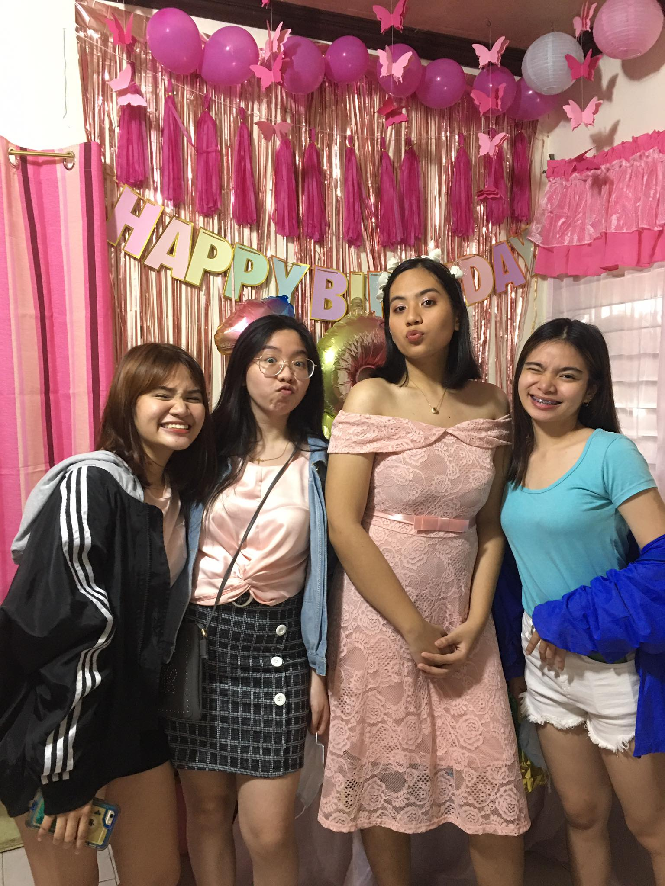
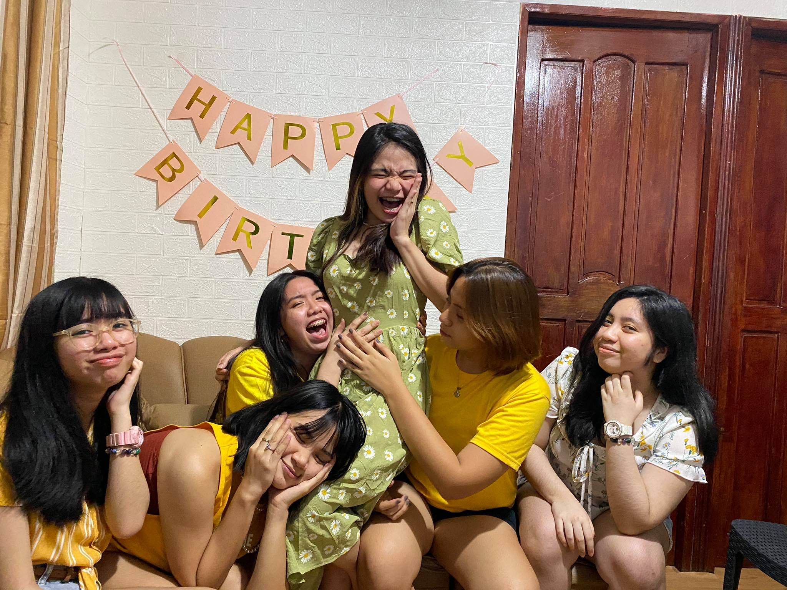
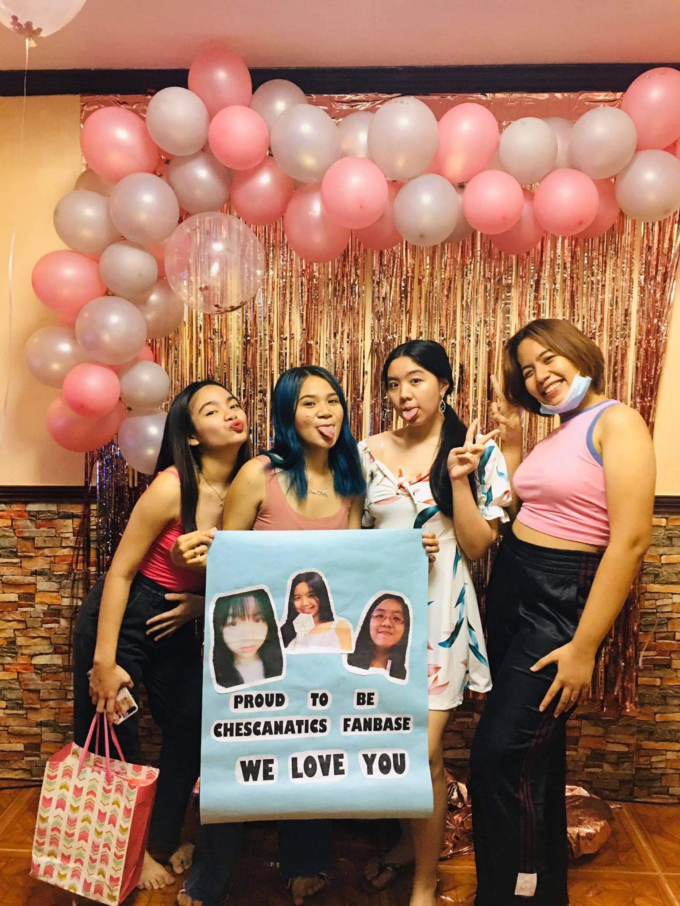
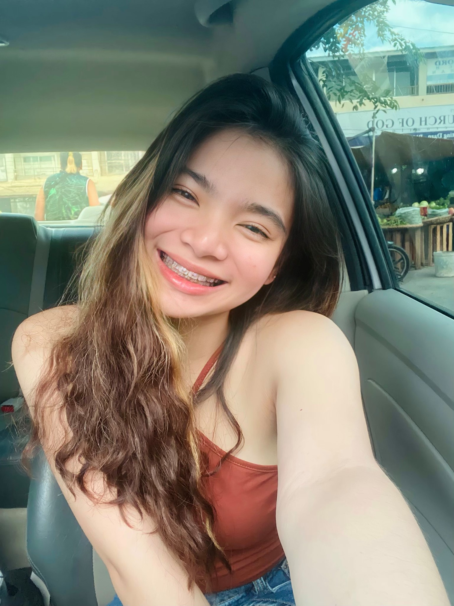
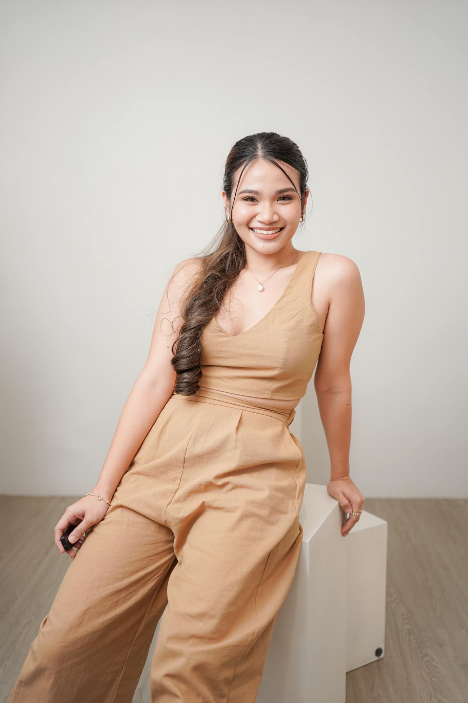
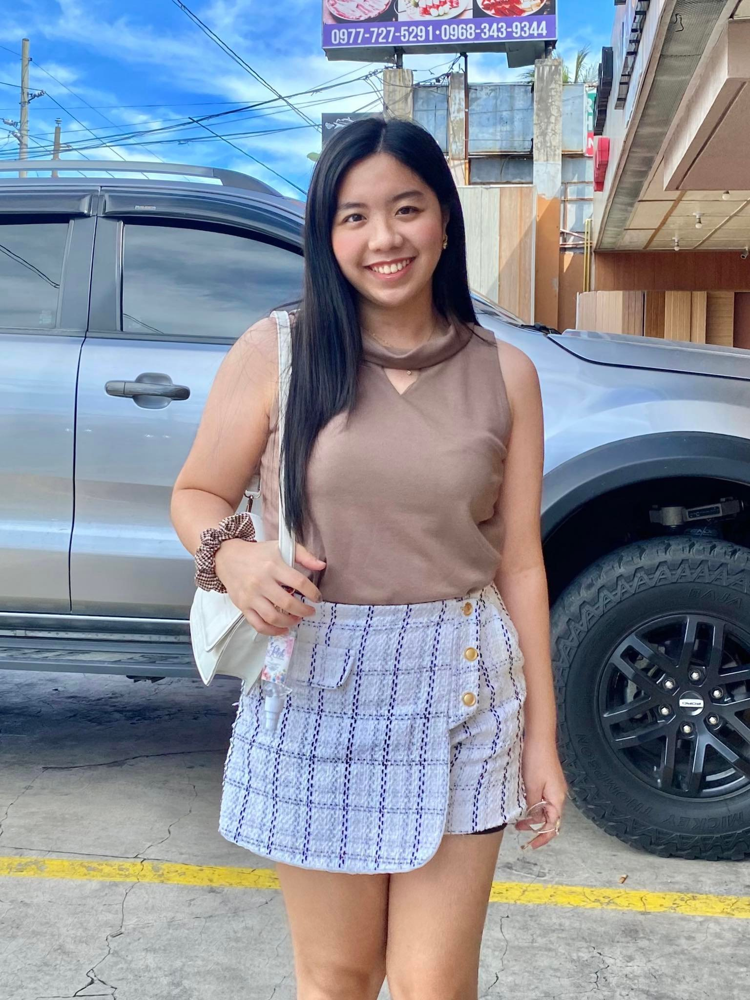

These are my chilhood friends
we are neigborhood that became friends. When we were young we always dance and act like we are the korean girl group 2ne1.

"My 18th Birthday"
We celebrated my birthday in our house.
It was memorable, we really had so much fun and that day it feels like we reunited because it's
been a long time since we had a bond because of our busy schedule.

"19th Birthday of Joena"
here we celebrated her birthday in her house and had fun together with her friends and our elementary friends.

"18th Birthday of Chesca"
Here we celebrated her birthday in her house. We think about of pranking her and told her we couldn't make it for her birthday, which made her cry when we unexpectedly showed up at her house.

Joena, 20 years old
she is my classmate, neighborhood and my friend. We were classmates since preschool up to Grade 6.

Marnel, 19 years old
Joena and marnel are sisters, we are also friends and schoolmates in elementary. We are both fan of the legendary korean boyband group EXO
Janella, 20 years old
When we were young we used to make tease of her
but became bestfriends, We used to play paper doll, barbie doll and watch some barbie movies in her house.

Chesca, 19 years old
We became friends because of our parents and we once also became classmates in elementary. She is intelligent and a very cheerful person and she is the reason why I became a fan of korean boyband group EXO that inspired us to attend a concert in 2018.